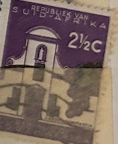
| SOURCE | TITLE| IMAGE MATCH | click to source page |
| HipStamp | South Africa #292 2 1/2c Groot Constantia | Africa - South Africa, General Issue Stamp / HipStamp | 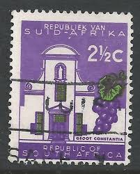 |
| HipStamp | South Africa 296 Used | Africa - South Africa, General Issue Stamp / HipStamp | 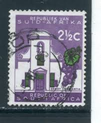 |
| Alamy | SOUTH AFRICA - CIRCA 1961: a stamp printed in South Africa shows Groot Constantia, The Oldest Wine Estate in South Africa, circa 1961 Stock Photo - Alamy | 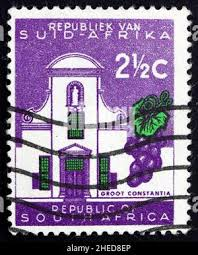 |
| HipStamp | South Africa 271 Groot Constantia | Africa - South Africa, General Issue Stamp / HipStamp | 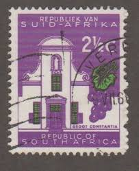 |
| HipStamp | South Africa #292 2 1/2c Groot Constantia | Africa - South Africa, General Issue Stamp / HipStamp | 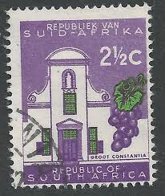 |
| eBay | Used Postage South African Stamps for sale | eBay | 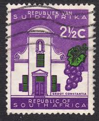 |
| Alamy | Stamp printed in South Africa shows image of the Neckpiece of lions claws, Zulu, circa 2010 Stock Photo - Alamy | 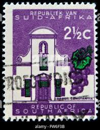 |
| HipStamp | South Africa - #271 Groot Constantia - Used | Africa - South Africa, General Issue Stamp / HipStamp | 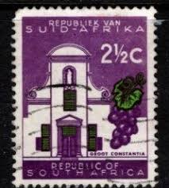 |
| Colnect | Stamp: Groot Constantia (South Africa(Country themes - Wmk. multiple RSA) Mi:ZA 319a,Sn:ZA 292,Yt:ZA 285,Sg:ZA 230,SAC:ZA 229 📮 | 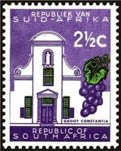 |
| eBay UK | South African 2 1/2c - Groot Constantia Scott# 258a 1961 - Used | 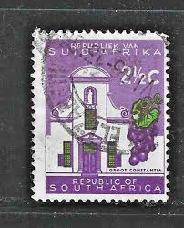 |
| Some Philately questions I have : r/philately | 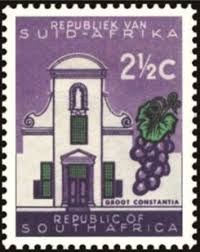 | |
| stampsandstuff.net | Stamps from South Africa | 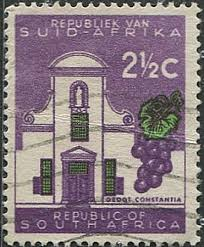 |
| WordPress.com | Republic of South Africa #258 (1961) – A Stamp A Day | 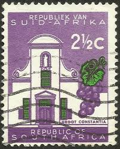 |
| PicClick UK | SOUTH AFRICA "POURING Gold" 2c 1961 Stamp £2.51 - PicClick UK | 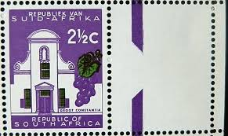 |
| 18 Rare stamps ideas | rare stamps, postage stamps, stamp collecting | 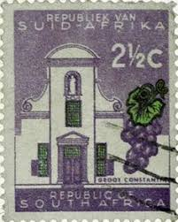 | |
| Bob Shop | Republic of South Africa - RSA 1964-68 21/2c MNH LARGE PERF SHIFT TO RIGHT was listed for 0.00 on 16 Oct at 20:16 by Sunny stamps in Port Elizabeth (ID:655812348) | 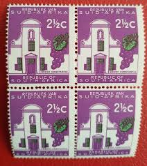 |
| HipStamp | South Africa 332: 4c Groot Constantia, used, VF | Africa - South Africa, General Issue Stamp / HipStamp | 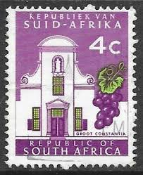 |
| HipStamp | South Africa 258: 2.5c Groot Constantia, used, VF | Africa - South Africa, General Issue Stamp / HipStamp | 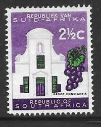 |
| Colnect | Stamp: Groot Constantia (South Africa(Country themes - Wmk. coat of arms) Mi:ZA 291I,Sn:ZA 258,Yt:ZA 252,Sg:ZA 202,SAC:ZA 201 📮 | 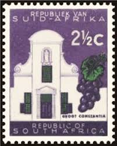 |
| Etsy | Wine Charm. Perfect Sterling Silver Wine Pendant Features a Vintage Australian Postage Stamp. A Wine Pendant for a Wine Lover. Gift for Her. - Etsy | 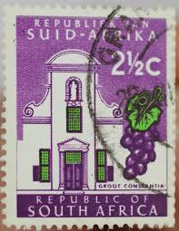 |
| Shutterstock | 6+ Thousand South Africa Lettering Royalty-Free Images, Stock Photos & Pictures | Shutterstock | 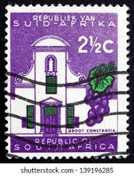 |
| eBay | South Africa - 1961 - 2.5¢ - Definitive Issue - Groot Constantia - #18167 | eBay | 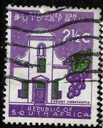 |
| Alamy | South Africa Postage Stamp - Groot Constantia Stock Photo - Alamy | 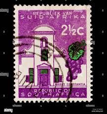 |
| Dreamstime.com | Groot Constantia Wine Estate Editorial Stock Photo - Image of beautiful, gold: 219691128 | 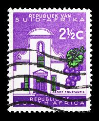 |
| Come across a South Africa 21/2C error no colour to the building like the other one different purple too from a collection I've just brought | 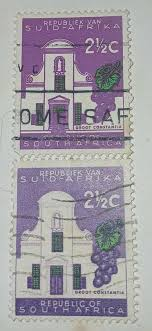 | |
| DEVERELL / MACGREGOR : http://www.rhodesia.co.za | SOUTH AFRICA | Republic of South Africa, Homelands | 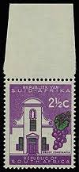 |
| BidCurios | 1961 South Africa 2½c "Groot Constantia wine estate" Used stamp - BidCurios | 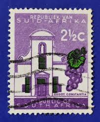 |
| eBay UK | Vintage Collection Fourteen Postage Stamps South Africa Flowers Buildings Sheep | eBay UK | 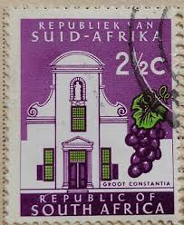 |
| Todocolección | sello 2 1/2 c sudafrica 1961 rsa - racimo uva - Acquista Francobolli antichi di Sudafrica su todocoleccion | 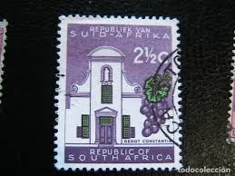 |
| BidCurios | 1937 Canada 3c King George VI Used stamp - BidCurios | 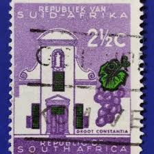 |
| Alamy | Groot Constantia, grape, postage stamp, South Africa, 1961 Stock Photo - Alamy | 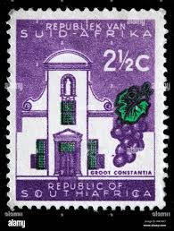 |
| YouTube | Cape of Good Hope Stamps - S2E20 - YouTube | 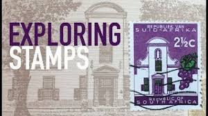 |
| Dreamstime.com | 126 Grape Embellishment Stock Photos - Free & Royalty-Free Stock Photos from Dreamstime | 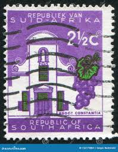 |
| BidCurios | 1948 India 1 1/2 annas "Mahatma Gandhi" Used stamp - BidCurios | 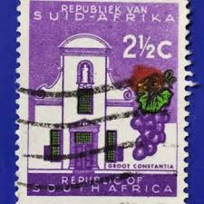 |
| Shutterstock | Karnal Haryana India -august 1 2025-closeup Stock Photo 2669181595 | Shutterstock | 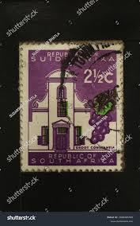 |
| PicClick UK | 2 1⁄2C South Africa postage stamp - groot constantia - posted 1964 see scan £1.16 - PicClick UK | 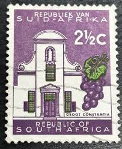 |
| eBay | South Africa stamps - Groot Constantia - 2.1/2 cent 1961 Sg:ZA 213a | eBay | 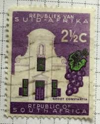 |
| Alamy | South africa postage stamp hi-res stock photography and images - Page 7 - Alamy | 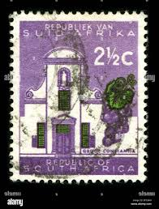 |
| eBay | Republic of south Africa stamp worlds 2 1-2C paper art | eBay | 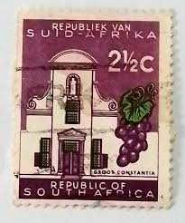 |
| eBay | South Africa - 1961 Definitive Issue #2 - Groot Constantia | eBay | 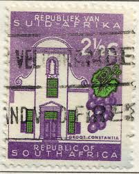 |
| Is South Africa a British colony? | 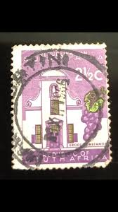 | |
| What physical process creates stamp variety? | 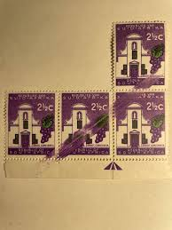 | |
| southafricacollector.com | Republic of South Africa Stamps 1961 - 2013 Definitive Issues | 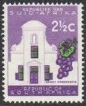 |
| Alamy | Groot constantia south africa hi-res stock photography and images - Alamy | 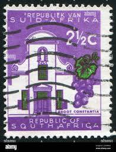 |
| What is the meaning of the date stamp on a 1970 stamp? | 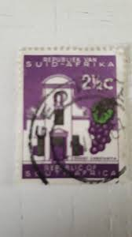 | |
| Learn Something New Everyday | The History of Wine | 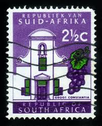 |
| Shutterstock | 5+ Hundred Republiek Van Suid Afrika Royalty-Free Images, Stock Photos & Pictures | Shutterstock | 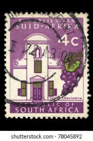 |
| Todocolección | africa del sur, 1962, groot constantia, yvert 2 - Buy Antique stamps of South Africa on todocoleccion | 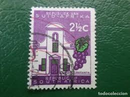 |
| Value of usa control blocks versus singles? | 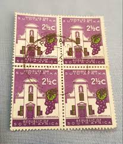 | |
| Discover 260 Stamps and postage stamps ideas | africa, stamp, south africa and more | ||
| Duzik Stamps | South Africa (Pre-1970) - Duzik Stamps | |
| eBay | South Africa 258 used | eBay | |
| eBay | BARBADOS SC# 337 1970 15c BUILDING DEFINITIVE USED VF VINTAHE OLD STAMP | eBay | |
| Bob Shop | Union of South Africa - SOUTH AFRICA (Molehill Flaw) was listed for 1,500.00 on 8 Dec at 15:16 by LittleMinx in Johannesburg (ID:629302932) | |
| Stamp Community Forum | South African Stamps Difference In Colours ? - Stamp Community Forum | |
| eBay | Three used Republic Of South Africa Groot Constantia 2 1/2c Stamps | eBay | |
| Avion Thematics | South Africa 1961 Cape Town Castle Entrance 10c (no Wmk) Unmounted Mint, SG 217, stamps on castles | |
| Exploring Stamps | Look as these! 👀 A perforation error on these 1960s Groot Constantia stamps (South Africa) Listing this block on eBay. #philately | Instagram | ||
| Colnect | Stamp: Cape Town Castle (South Africa(Country themes - Wmk. multiple RSA) Mi:ZA 322,Sn:ZA 295,Yt:ZA 287,Sg:ZA 233,SAC:ZA 232 📮 |